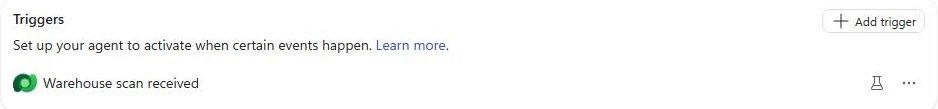

- Project deep dive
- Vink Customer Care Agent · Part 9 of 11
9 · The autonomous warehouse trigger
Where this page fits
Step 1
Customer chat
This page · Step 2
Agent: instructions, topics, knowledge
This page · Step 3
Agent flows (tools)
This page · Step 4
Dataverse tables
This page · Step 5
Background flows
Step 6
Care Hub app
Highlighted boxes are what this page explains. The chain runs left to right, top row then bottom row.
The story so farSo far a customer started everything. Here the data starts the agent.
From the root: an agent without a chat
WhatAn event trigger sends a message to the agent when something happens elsewhere. The agent then plans and runs tools on its own.
WhyWhen a returned product reaches the warehouse, the customer should be updated at once, without a person retyping anything.
DemoA ticket's status changes to Scanned at warehouse.

The trigger and the message
When a row is added, modified or deleted (Dataverse)
Change type: Modified
Table: vin_ccserviceticket
Scope: Organization
Select columns: vin_ticketstatus
Filter rows: vin_ticketstatus eq 949870002 (Scanned at warehouse)Sends a prompt to the specified copilot for processing
Copilot: vin_CustomerCareAgent
Message: Use content from @{triggerBody()} (a Service Ticket row). A returned product
has just been scanned at the warehouse. Call the Customer Care - Repair Update
tool with the ticket number from the vin_ticketnumber field of this row.
Do not ask any questions; no customer is chatting.The trigger is a flow with a Dataverse trigger and one action that sends a prompt to the agent. The filter makes it fire only for the one status that matters.
The whole chain
From a scan to an email
Warehouse staff set status = Scanned at warehouse
Ticket Status Changed emails: your product has arrived…
Warehouse scan received sends the row to the agent
Agent instructions: call Repair Update; don't ask questions
Repair Update tool: read repair result → status Repaired or Replaced
Ticket Status Changed runs again: on its way back to you
Inside Repair Update
| Step | Logic |
|---|---|
| Find ticket | vin_ticketnumber eq 'TKT-…', top 1 |
| Result text | The technician's repair result, or a default Inspected and repaired… |
| Is replacement? | Result starts with replacement or contains replaced with a new unit |
| Update ticket | Status Repaired (949870003) or Replaced (949870004), latest update, customer notified |
That last update changes the status again, which fires Ticket Status Changed (Part 8). One event leads to two customer updates and no manual steps. Each part does one job and they're linked through the data.
Watch out
- Autonomous runs have no customer to ask: the instructions say do not ask questions.
- Filter the trigger tightly so the agent isn't called for every edit.
- Event triggers can affect billing; check before enabling in production.
- The Repair Update tool is agent-level, so the orchestrator can call it from the trigger message.
Common mistakes
- Sending the whole row when a ticket number is enough.
- A trigger with no filter.
- Writing the status in two places that both email.